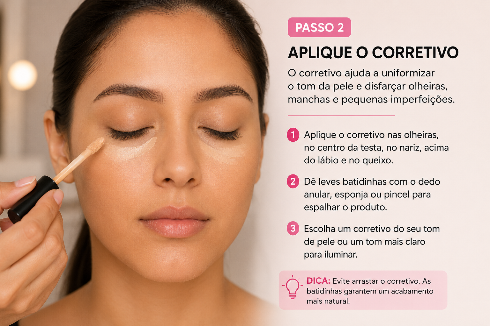
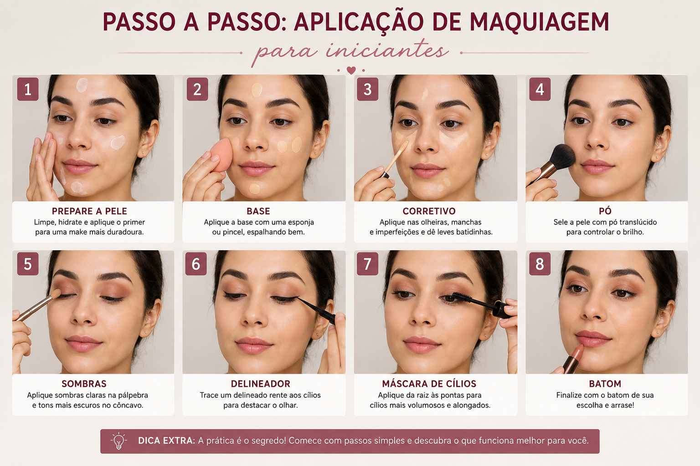

Introdução
Aprender maquiagem do zero não precisa ser confuso. Esta aula de maquiagem para iniciantes organiza o essencial: o que comprar (ou não), como segurar os pincéis, a ordem correta de aplicação e como montar um look simples e bonito.
O objetivo não é copiar um tutorial viral. É entender o porquê de cada etapa, para que você consiga adaptar a técnica ao seu rosto, à sua pele e ao seu dia a dia.
Objetivos de aprendizagem
Ao final desta aula, você será capaz de:
- Identificar os produtos básicos de um kit inicial de maquiagem.
- Reconhecer as funções principais dos pincéis mais usados.
- Aplicar a ordem correta de produtos no rosto.
- Executar um look diário simples e equilibrado.
- Evitar os erros mais comuns de quem está começando.
Materiais e produtos
Você não precisa de dezenas de itens. Comece com o essencial e vá expandindo conforme praticar.
Kit básico sugerido
- Hidratante facial (adequado ao seu tipo de pele)
- Primer (opcional no inÃcio)
- Base ou BB cream
- Corretivo
- Pó translúcido ou compacto
- Blush em pó ou creme
- Máscara de cÃlios
- Lápis ou sombra para sobrancelha
- Batom ou gloss
Pincéis úteis no começo
- Pincel de base (ou esponja)
- Pincel de pó
- Pincel de blush
- Pincel pequeno para sobrancelha ou detalhes
Se o orçamento estiver apertado, priorize base, corretivo, pó, blush e máscara. Muitos produtos multifuncionais resolvem bem no inÃcio.
Conceitos essenciais
Ordem de aplicação
A sequência clássica ajuda a evitar manchas e a prolongar a duração:
- Limpeza e hidratação
- Primer (se usar)
- Base
- Corretivo
- Pó
- Contorno e blush (se aplicáveis)
- Olhos e sobrancelhas
- Lábios
- Fixador (opcional)
Menos é mais no começo
Camadas finas e bem espalhadas costumam render melhor do que quantidades grandes de produto. Observe a pele com luz natural sempre que possÃvel.
Passo a passo: sua primeira maquiagem completa
Agora que você já conhece os produtos essenciais e entende a ordem básica de aplicação, é hora de montar sua primeira maquiagem completa. O objetivo desta prática não é criar um resultado pesado ou perfeito na primeira tentativa. A ideia é aprender a controlar quantidade, acabamento e sequência.
Faça cada etapa com calma e observe o efeito antes de adicionar mais produto. Uma das habilidades mais importantes para quem está começando é aprender a construir a maquiagem aos poucos.
1. Limpe e prepare a pele
Comece com o rosto limpo. Se houver resÃduos de maquiagem, excesso de oleosidade ou sujeira, a base pode acumular e perder uniformidade. Depois da limpeza, aplique um hidratante compatÃvel com sua pele e espere alguns minutos antes de continuar.
Se você utiliza protetor solar durante o dia, ele deve entrar antes da maquiagem. O primer é opcional para iniciantes: ele pode ajudar no acabamento, mas uma boa preparação de pele já faz grande diferença.

2. Aplique a base em pequenas quantidades
Coloque uma pequena quantidade de base no centro do rosto e espalhe em direção às laterais. Você pode usar uma esponja úmida, um pincel próprio para base ou os dedos limpos, dependendo da textura do produto.
Não tente cobrir tudo de uma vez. Uma camada fina costuma produzir um resultado mais natural. Se alguma região ainda precisar de cobertura, adicione uma segunda camada somente naquele ponto.
3. Use o corretivo apenas onde necessário
O corretivo pode ser aplicado abaixo dos olhos, em pequenas manchas, marcas ou áreas que você deseja iluminar. Evite colocar uma grande quantidade formando um triângulo pesado sob os olhos, principalmente enquanto ainda está aprendendo.
Dê leves batidinhas para espalhar. Esfregar o produto pode remover a base aplicada anteriormente.
4. Sele com pó estrategicamente
O pó ajuda a controlar brilho e a aumentar a estabilidade dos produtos cremosos. Isso não significa que o rosto inteiro precise receber uma camada pesada.
Comece pela zona T — testa, nariz e queixo — ou pelas regiões que apresentam maior oleosidade. Peles secas normalmente precisam de menos pó.
5. Adicione cor com blush
Pegue pouco blush no pincel e retire o excesso antes de tocar o rosto. Aplique gradualmente nas maçãs do rosto e esfume em direção às têmporas.
O segredo é construir intensidade. É muito mais fácil adicionar produto do que tentar remover um excesso.
6. Preencha as sobrancelhas com leveza
Observe primeiro onde existem falhas. Em vez de desenhar uma sobrancelha completamente nova, faça pequenos traços imitando pelos e respeitando o formato natural.
A região inicial da sobrancelha geralmente fica mais bonita quando permanece suave. Concentre um pouco mais de definição no arco e na parte final.
7. Finalize os olhos
Para a primeira maquiagem, você não precisa dominar um esfumado complexo. Uma sombra neutra suave pode ser aplicada na pálpebra, seguida de máscara de cÃlios.
Ao aplicar máscara, posicione a escova próxima à raiz dos cÃlios e faça movimentos suaves em direção à s pontas. Evite compartilhar máscara, lápis ou produtos que tenham contato direto com a região dos olhos.
8. Escolha um produto para os lábios
Batom, gloss ou hidratante com cor funcionam muito bem para iniciantes. Se estiver aprendendo a aplicar batom mais intenso, comece pelo centro dos lábios e vá definindo as bordas aos poucos.
9. Observe o equilÃbrio do rosto
Antes de adicionar qualquer outro produto, afaste-se do espelho e observe o conjunto. Ver a maquiagem de uma distância maior ajuda a perceber se o blush está muito forte, se a base termina abruptamente no maxilar ou se as sobrancelhas estão diferentes entre si.
10. Faça a revisão final
Veja o resultado também em luz natural sempre que possÃvel. A iluminação do banheiro ou do quarto pode esconder diferenças de cor e excesso de produto.
Use essa revisão como aprendizado, não como julgamento. Identifique uma coisa que funcionou bem e uma coisa que você pretende melhorar na próxima prática.

Se você estiver em dúvida entre colocar mais produto ou esfumar melhor o que já aplicou, primeiro esfume. Muitas vezes, o acabamento melhora sem precisar adicionar nada.
Erros comuns de iniciantes
- Usar base muito clara ou muito escura em relação ao pescoço.
- Aplicar corretivo em excesso e marcar linhas de expressão.
- Esquecer de esfumar o blush ou o contorno.
- Pincéis sujos, que transferem cor antiga e bactérias.
- Maquiagem pesada demais para o dia a dia, sem considerar a ocasião.
Dicas profissionais
- Sempre observe o resultado perto de uma janela ou em luz natural.
- Fotografe o look e compare com o espelho — a câmera ajuda a identificar excessos.
- Limpe os pincéis regularmente (sabão neutro ou especÃfico para pincéis).
- Teste produtos novos em uma área pequena da pele se você tiver sensibilidade.
Higiene e segurança
Mãos limpas, pincéis limpos e produtos dentro do prazo de validade reduzem o risco de irritações. Não compartilhe máscara de cÃlios ou lápis de olho com outras pessoas. Se houver vermelhidão, ardência ou reação, interrompa o uso e, se necessário, procure orientação profissional de saúde.
ExercÃcio prático
Faça o look completo desta aula em um dia de pouca pressa. Depois, anote:
- O que ficou fácil.
- O que ainda parece difÃcil.
- Qual produto você usaria menos na próxima vez.
Repita o mesmo look em outro dia e compare. A prática consciente acelera o aprendizado mais do que trocar de tutorial o tempo todo.
Revisão rápida
- Kit básico é suficiente para começar.
- Ordem de aplicação importa.
- Camadas finas e esfumado são seus aliados.
- Higiene dos pincéis e produtos é parte da técnica.
- Observe luz natural e adapte ao seu rosto.
Perguntas frequentes desta aula
Preciso de todos os produtos listados?
Não. Priorize hidratante, base ou BB cream, corretivo, pó, blush e máscara. O restante pode entrar depois.
Posso usar os dedos em vez de pincéis?
Sim, especialmente no inÃcio, desde que as mãos estejam limpas. Alguns produtos cremosos espalham bem com os dedos.
Quanto tempo leva para me sentir confortável?
Varia de pessoa para pessoa. Com prática regular, muitos iniciantes sentem mais segurança em poucas semanas.
Conclusão
Você deu o primeiro passo estruturado na maquiagem. Na próxima aula, vamos aprofundar a preparação de pele — o fundamento que faz qualquer make parecer mais profissional e durar mais tempo.